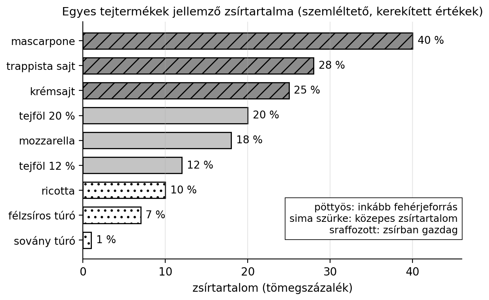

Reggel van a cukrászüzemben. A beszállító friss tejfölöket, többféle túrót, mascarponét, krémsajtot és egy tömbsajtot hoz. A napi munkalapon túrótorta, sajtos pogácsa, tejszínes mousse és sós teasütemény is szerepel. Ha a cukrász rossz állagú túrót választ, a töltelék folyik. Ha túl olvadékony sajtot reszel a pogácsa tetejére, az megég a sütőben. Ha a mascarpone túl lágy, a mousse nem lesz krémes. A tejtermékek kiválasztása tehát nem ízlés kérdése: minden terméknél a zsírtartalmat, szárazanyagot, állagot és a későbbi hőhatást is ellenőrizni kell.
A savanyított tejtermékek, túrók és sajtok közös jellemzője, hogy tejből készülnek, de a víztartalmuk, zsírtartalmuk, fehérjeszerkezetük és ízük eltérő. A cukrász feladata, hogy ezeket a tulajdonságokat a készítendő krémhez, töltelékhez vagy tésztához illessze.

Az ábra azt mutatja: a mascarpone és a trappista sajt zsírban gazdag, a sovány túró és a ricotta inkább fehérjeforrás, a tejfölök pedig a kettő között helyezkednek el. A zsírtartalom mellett legalább ennyire fontos a szárazanyag (azaz a víz nélküli anyagok mennyisége) és a szerkezet.
Definíció. A tejsavas erjedés olyan biológiai folyamat, amelyben a tejsavbaktériumok a tejcukrot (laktózt) tejsavvá alakítják. A sav csökkenti a pH-t, kicsapja a tejfehérjét, sűríti az állagot, és jellegzetesen savanykás ízt ad. A savanyított tejtermékek között a cukrászatban leggyakrabban a joghurtot, a kefirt és a tejfölt használjuk. A joghurt és a kefir ivó vagy kanalazható állagú, a tejföl sűrűbb, zsírosabb, és hőkezelésre is jobban viselkedik.
Definíció. A túró a tej savanyításával, majd a savó elválasztásával készült, szemcsés vagy krémes állagú, fehérjében gazdag friss tejtermék. A zsírtartalma a felhasznált tej zsírtartalmától függ: sovány, félzsíros és zsíros túrót különböztetünk meg. A cukrászati gyakorlatban a túrót mindig áttörjük vagy finomra keverjük, mert a nagy rögök a krémben és a töltelékben élvezhetetlenek.
Definíció. A krémsajt (cream cheese) lágy, kenhető, enyhén savanykás friss sajt. A mascarpone olasz eredetű, magas zsírtartalmú, vajkrémes, kevéssé savanykás friss sajt; gyakran tejszínből készül citromsavval vagy más savval való alvasztással. A ricotta a savó újrahasznosításával készülő, lágy, enyhén édeskés, alacsonyabb zsírtartalmú friss sajt. A sajt gyűjtőfogalom alatt a cukrászati gyakorlatban elsősorban a kemény és félkemény érlelt sajtokat értjük (pl. trappista, edami, cheddar, parmezán jellegű), valamint a friss, gyúrt tésztájú mozzarellát, amelyeket sós termékekhez reszelünk, kockázunk vagy sütünk.
Jogszabály. A tejtermékek megnevezésére, zsírtartalom szerinti osztályozására és jelölésére az EU közös piacszervezési előírásai és a Magyar Élelmiszerkönyv vonatkozó fejezetei vonatkoznak (ellenőrizendő: hatályos Magyar Élelmiszerkönyv tej- és tejtermék fejezete, 1308/2013/EU rendelet tejtermék-definíciók). A cukrászüzemben a termékcímkén szereplő zsírtartalom és szárazanyag-tartalom mindig a receptúra tervezésének kiindulópontja.
A tejtermék kiválasztásának négy szempontja van: zsírtartalom, szárazanyag-tartalom (tehát mennyi víz van benne), állag/keverhetőség, és hőstabilitás.
| Termék | Jellemző zsírtartalom (tömeg%) | Szárazanyag (tömeg%) | Állag | Tipikus cukrászati felhasználás | Megjegyzés |
|---|---|---|---|---|---|
| Joghurt (natúr) | 0,5–3,5 | 10–14 | folyós, kanalazható | italok, kevert tészták lágyítása, fagylaltalap | hőkezelve kicsapódhat, óvatosan adagoljuk |
| Kefir | 0,5–3 | 8–13 | híg, enyhén szénsavas | italok, gyümölcskrémekhez kevésbé jellemző | erjedési gáz miatt habosodhat |
| Tejföl 12–20% | 12–20 | 20–30 | sűrűn folyó, kanalazható | túrótöltelék lazítása, sós krémek, krémes sós pogácsák | hőkezelhető, de forralva kicsapódhat |
| Sovány túró | kb. 0,5–1 | 20–25 | morzsalékos, száraz (jelölve; ellenőrizendő: termékcímke) | diétás túrótöltelék, túrófagylalt soványítása | áttörés után szemcsés maradhat |
| Félzsíros túró | kb. 7 | 25–30 | enyhén krémes | túrótorta, túrós táska, túrófagylalt, túrós lepény | a leggyakoribb cukrászati túró |
| Zsíros túró | kb. 10–12 | 30–38 | krémes, lágy | gazdag túrókrémek, édes töltelékek | könnyebben kenhető, a krém lágyabb lesz; tárolás közben savó válhat ki |
| Krémsajt | 20–30 | 35–45 | sima, kenhető | sajttorta (baked cheesecake), mázak, sós krémek | hőkezelésre stabil, de túlkeverve folyósodhat |
| Mascarpone | 35–45 | 45–55 | vajkrémes, nagyon krémes | tiramisu, mousse, gyors krémek, fagylalt | ne verjük túl, mert kicsapódhat |
| Ricotta | 8–12 | 25–30 | lágy, kissé szemcsés | könnyű túrótorták, olasz desszertek, töltelékek | több vizet tartalmaz, lecsepegtetést igényelhet |
| Kemény/félkemény sajt (pl. trappista, edami, cheddar) | 20–35 | 55–70 | kemény, reszelhető | sajtos pogácsa, sós teasütemény, szórás, sós mártogatós | reszelve gyorsan olvad, magas hőn éghet |
| Mozzarella | 16–22 | 35–45 | rugalmas, szálasodó | sós sütemények tölteléke, melegszendvics-jellegű termékek | hőkezelés után nyúlós, frissen a legjobb |
Megjegyzés. A táblázat értékei tájékoztató, kerekített értékek; a tényleges zsír- és szárazanyag-tartalmat mindig a gyártói adatlap és a termékcímke határozza meg (ellenőrizendő: konkrét termék adatlapja).
A túró kiválasztásánál először a receptúra állagcélját nézzük. A túrótortához közepesen krémes, de nem vizes túró kell: a félzsíros túró általában a legjobb kompromisszum. Ha sovány túrót használunk, a krém száraz lesz, ezért egy kevés tejfölt vagy tejszínt kell hozzáadni. Ha zsíros túrót használunk, a krém lágyabb, de több vizet engedhet, ezért a tölteléket hűtés előtt sűríteni kell (pl. kevés zselatinnal vagy főzött krémmel).
A mascarpone különösen érzékeny a túlverésre. Ha habverővel sokáig dolgozzuk, a zsír és a víz szétválik, a krém „kicsapódik”. Ezért a mascarponét mindig hűtve, rövid ideig, alacsony fokozaton keverjük, vagy kézi habverővel dolgozzuk el.
A sajtok sós süteményekhez való kiválasztásánál az olvadáspont és a reszelhetőség a döntő. A trappista és az edami jól reszelhető, egyenletesen olvad. A cheddar erősebb ízű, de ha magas hőfokon sütjük, a zsír kiválhat belőle, és a pogácsa teteje zsíros lesz. A parmezán jellegű sajtok nagyon szárazak, ezért reszelve inkább szóráshoz vagy ízesítéshez valók, nem olvadnak krémesre. A mozzarellát friss, nedves állaga miatt elsősorban töltelékként használjuk, és csak rövid hőkezelésnek tesszük ki.
A tejtermékek keverésekor gyakran kell kiszámítani a keverék zsírtartalmát vagy azt, hogy mennyi zsírosabb tejterméket adjunk egy soványabbhoz.
1. példa. Egy túrótortához a recept 600 g félzsíros túrót ír elő, amelynek zsírtartalma 7%. Az üzemben csak sovány túró van (1% zsír) és 20%-os tejföl. Mennyi sovány túró és mennyi tejföl kell ahhoz, hogy a keverék összes zsírtartalma 7% legyen, és az össztömeg 600 g maradjon?
Legyen a tejföl tömege g, a sovány túróé g. A zsír mennyisége:
Tehát kb. 189,5 g tejföl és 410,5 g sovány túró kell. Ellenőrzés: g zsír; g zsír; összesen kb. 42 g zsír 600 g-ban, ami 7%. ∎
2. példa. Egy mousse-hoz 300 g mascarponét (40% zsír) és 200 g habtejszínt (30% zsír) keverünk. Mennyi lesz a keverék zsírtartalma?
Tehát a keverék zsírtartalma 36%. Ez magas, ezért a mousse gazdag, krémes, de gyorsan olvad a szájban. ∎
Cél: A tanuló érzékszervi vizsgálattal minősítse a friss tejtermékeket (tejföl, túró, krémsajt, mascarpone, sajt), és válassza ki a megfelelőt egy adott cukrászati feladathoz.
Eszközök és anyagok: hűtött minták a vizsgálandó tejtermékekből, tiszta kés, kanál, fehér tányér, szagtalan pohár, hőmérő, jegyzőkönyv, kézmosó, papírtörlő.
Higiéniai munkakezdés. Munkaruha, hajháló, ékszer le; kézmosás; a munkafelület fertőtlenítése; a mintákat a hűtőből közvetlenül a vizsgálat előtt vegyük ki, és tartsuk 0–5 °C között.
Biztonsági korlát. A vizsgálat konyhai eszközökkel történik; nincs gépi veszély. A romlott vagy gyanús tejterméket tilos megkóstolni – ilyenkor csak szag- és látványvizsgálatot végzünk, és a mintát selejtezzük.
Lépések:
Ellenőrzési pontok: a hűtési hőmérséklet; a csomagolás sértetlensége; a szag és a szín eltérése; az állag a felhasználáshoz való alkalmasság.
Tipikus hibák: szobahőmérsékleten hagyott minta kóstolása; penészes sajt „megmentése” a penész levágásával (Tilos.); a folyós szérumot tartalmazó túró felhasználása lecsepegtetés nélkül; a mascarpone túlverése.
Takarítás: a mintákat és maradékot a hulladékgyűjtőbe; a felületet tisztítószerrel, majd fertőtlenítővel kezeld; a kanalat és poharat mosogasd el.
A friss tejtermékek minőségi jellemzőit a látvány, szag, állag és íz együttesen adja. A jó túró halvány fehér, enyhén krémes, friss savanykás illatú, nem keserű. A jó tejföl sima, fényes, nem csomós, és nem enged levegő hatására savót. A jó krémsajt és mascarpone egynemű, fényes, vajszerűen krémes, nem szétváló. A jó kemény sajt tömör, egyenletes színű, tiszta illatú.
Ha a tejtermék penészes, nyálkás, ammoniás szagú, keserű vagy ecetes ízű, a terméket selejtezni kell. A penész a felület alá is benőhet, ezért a penészes részt levágni és a maradékot felhasználni a friss tejtermékeknél Tilos. A kemény érlelt sajtoknál a felületi penész levágása a vendéglátási gyakorlatban bizonyos esetekben megengedett, de ezt mindig a HACCP-terv és a gyártói útmutató szerint kell eldönteni (ellenőrizendő: hatályos élelmiszerbiztonsági útmutató).
A tömegellenőrzés a receptúra szerinti mennyiség betartását jelenti. A túrós tölteléknél a keverék össztömege nem térhet el a receptúra alapmennyiségétől ±5%-nál nagyobb mértékben (ellenőrizendő: belső minőségi előírás).
| Hiba (tünet) | Ok | Megelőzés / javítás |
|---|---|---|
| A túrótorta tölteléke folyik, vizes lesz. | Magas víztartalmú zsíros túró vagy rosszul lecsepegtetett túró; nem sűrítették a tölteléket. | Lecsepegtetett, közepes szárazanyagú túrót válassz; meleg krémnél adj hozzá tojássárgás sűrítést, hideg krémnél kevés zselatint vagy főzött krémet. |
| A mascarpone krém kicsapódik, szemcsés lesz. | Túlverés, túl meleg mascarponé, hideg tejszín hirtelen hozzáadása. | Hűtött alapanyagokkal dolgozz, rövid ideig keverd, a tejszínt külön verjük fel, és óvatosan forgassuk a mascarponéhoz. |
| A sajtos pogácsa teteje megég, a sajt keserű lesz. | Magas sütőhőmérséklet, olvadó sajt hosszú sütési idő alatt. | A sajtot a sütési idő utolsó harmadában szórd a tetejére, vagy alacsonyabb hőfokon, hosszabb ideig süsd. |
| A tejföl kicsapódik a sós krémben forraláskor. | A tejföl fehérjéje magas hőn koagulál. | A tejfölt ne forrald; ha melegíteni kell, előbb temperáld (kis meleg alappal keverd el), majd alacsony hőn melegítsd. |
| A krémsajt folyós, nem kenhető. | Túl alacsony szárazanyag-tartalmú krémsajt, vagy a terméket felmelegítették. | Mindig hűtve tárold; ha mégis lágy, szűrd le, vagy keverd kevés puha vajjal, hogy stabilabb legyen. |
Egy cukrászda nyáron túrótortát készített nagy tételben. A beszállított félzsíros túró a szokásosnál több savót tartalmazott, mert a szállítás közben a hűtési lánc rövid időre megszakadt, és a túró felmelegedett. Az átvételkor a cukrász nem ellenőrizte a hőmérsékletet és a szérum mennyiségét. A túrótorta tölteléke a hűtőben sem dermedt meg, sütés közben a tészta elázott, és a vendégpanaszok miatt a teljes tételt selejtezni kellett.
Tanulság: a tejtermékek átvételénél mindig mérni kell a hőmérsékletet és ellenőrizni a csomagolás sértetlenségét. Az előírt hűtési hőmérséklet fölött érkező friss tejterméket nem vesszük át, hanem visszautasítjuk, és dokumentáljuk (helyesbítő tevékenység; ellenőrizendő: üzemi HACCP-terv). A megfelelően hűtött, de savós túrót felhasználás előtt le kell csepegtetni, és a töltelék víztartalmát a receptúrához kell igazítani. Továbbvitt eredmény. A túró nedvességtartalmának és zsírtartalmának ellenőrzése közvetlenül meghatározza a túrós töltelékek és a túrófagylalt sikerét a Sós töltelékek és a töltelékkészítés balesetvédelme és az Omlós tésztából készült torták alfejezetekben.
1. feladat (A) Sorold fel a friss tejtermékek négy fő minőségi jellemzőjét!
2. feladat (A) Határozd meg, hogy 250 g 20%-os tejfölből és 750 g 1%-os sovány túróból álló keverék hány tömegszázalék zsírt tartalmaz!
3. feladat (B) Egy túrós töltelékhez 800 g 7%-os zsírtartalmú túrómassza szükséges. Az üzemben 12%-os zsíros túró és 0,5%-os zsírtartalmú sovány túró van. Mennyit vegyél ki mindegyikből, hogy a keverék 7% zsírt tartalmazzon?
4. feladat (B) Egy mousse-hoz 200 g mascarponét (40% zsír) és 100 g habtejszínt (30% zsír) keverünk. Mennyi a keverék zsírtartalma? Hogyan változik, ha 50 g 12%-os tejfölt is hozzáadunk?
5. feladat (C) Hibaelemzés: A túrótorta tölteléke a hűtőben sem dermedt meg. Sorolj fel három lehetséges okot a tejtermékek oldaláról, és mindegyikre adj megelőzési javaslatot!
6. feladat (D) Végezd el a gyakorlati útmutató szerint három különböző tejtermék (pl. túró, tejföl, krémsajt) érzékszervi vizsgálatát, és tölts ki egy egyszerű minőségellenőrző lapot: termék neve, hőmérséklet, megjelenés, szag, állag, íz, értékelés (megfelelő/nem megfelelő). A feladat készítsen elő egy túrós töltelék receptúrát a Sós töltelékek és a töltelékkészítés balesetvédelme alfejezethez.
A friss tejtermékek négy fő minőségi jellemzője: megjelenés (szín, fény, egyneműség), szag (friss tejes, savanykás, idegen szagoktól mentes), állag (krémesség, szemcsésség, kenhetőség, víztartalom), íz (enyhén savanykás, tiszta, nem keserű, nem avas).
A keverék össztömege: g. A zsír mennyisége: g. A zsírtartalom:
Tehát a keverék 5,75% zsírt tartalmaz. ∎
Legyen a 12%-os zsíros túró tömege g, a sovány túróé g. A zsír:
Tehát 452 g zsíros túró és 348 g sovány túró szükséges. Ellenőrzés: g; g; összes zsír 55,98 g, 800 g-ban ez 7%. ∎
Az első keverék zsírtartalma:
Tejföl hozzáadásával az össztömeg 350 g, a zsír: g.
Tehát a keverék zsírtartalma 36,7%-ról 33,1%-ra csökken. ∎
Lehetséges okok és megelőzésük:
A gyakorlati útmutató alapján elvégzett érzékszervi vizsgálat és a kitöltött lap a dokumentáció része. A várt eredmény: minden minta hűtött, egynemű, friss illatú, a termékre jellemző állagú és ízű legyen. A nem megfelelő mintát selejtezni kell. A túrós töltelékhez a vizsgált túróból válasszuk ki azt, amelyik a legkrémesebb, de nem vizes, és zsírtartalma a receptúra szerinti (pl. félzsíros, 7% körüli).
A savanyított tejtermékek (joghurt, kefir, tejföl) tejsavas erjedéssel készülnek, és savanykás ízük, lágy állaguk miatt főleg töltelékek lazítására, tészták lágyítására és sós krémekhez használhatók. A túró fehérjében gazdag friss tejtermék; a sovány, félzsíros és zsíros változat zsír- és szárazanyag-tartalma eltérő, ezért a túrótortához, túrófagylalthoz és túrótöltelékhez mindig a receptúra állagcéljához igazodva választunk. A krémsajt és a mascarpone krémes, kenhető, de a mascarponét tilos túlverni, mert kicsapódik. A ricotta lágy, kissé szemcsés, és több vizet tartalmaz. A kemény és félkemény sajtok sós süteményekhez reszelve vagy kockázva használhatók; a trappista és edami jól olvad, a parmezán jellegű inkább szóráshoz való. A friss tejtermékeket mindig hűtve, 0–5 °C között kell tárolni, és átvételkor érzékszervi vizsgálattal ellenőrizni. A penészes, nyálkás, keserű vagy ammoniás szagú tejterméket selejtezni kell. Továbbvitt eredmények: a túró és a krémsajt kiválasztása meghatározza a túrós töltelékek és a túrófagylalt állagát (Sós töltelékek és a töltelékkészítés balesetvédelme), a sajtok kiválasztása a sós teasütemények és pogácsák sikerét, a túró szárazanyag-tartalma pedig az omlós tésztából készült torták töltelékének stabilitását (Omlós tésztából készült torták).